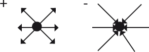

Fiat justitia—ruat caelum.
(Adil olasın ki gökler yere insin).
Antik Roma atasözü
Boş uzayda enerjinin varlığı (kozmolojik evrenimizi sarsan keşif, Şişme'nin yatağını oluşturan fikir) daha önce betimlediğim türden laboratuvar deneyleri bağlamında gayet iyi tesis edilmiş olan kuantum dünyası hakkında birşeyleri güçlendirir sadece. Boş uzay karmaşıktır. Kaynayıp duran bir sanal parçacıklar kazanıdır, bu parçacıklar o kadar kısa bir süre zarfında varlık bulup ortadan kayboluverirler ki onları doğrudan göremeyebiliriz.
Sanal parçacıklar kuantum sistemlerinin temel bir özelliğinin tezahürüdür. Kuantum mekaniğinin kalbinde kimi zaman siyasetçilere ya da şirket başkanlarına hükmeden bir kural yatar: Hiç kimsenin gözü üzerinde değilse, her şey mubahtır. Sistemler anlık da olsa, aslında ölçülüyor olsalar mümkün olmayacak haller de dahil olmak üzere, mümkün olarak bütün haller arasında gidip gelmeyi sürdürürler. Bu "kuantum dalgalanmaları" kuantum dünyası hakkında temel bir şey söylemektedir: Hiçlik kararsızdır. Hiçlik, bir anlığına bile olsa her zaman bir şey üretir.
Ama işte pürüz de burada. Enerjinin korunumu bize kuantum sistemlerinin ancak bu kadar kısa süre boyunca kararsız davranışlar gösterebileceğini söyler. Zimmetlerine para geçiren borsa simsarları gibi, bir sistemin dalgalandığı hal boş uzaydan biraz enerji alınmasını gerektiriyorsa, sistem bu enerjiyi ölçen birinin tespit edemeyeceği kadar kısa bir süre zarfında iade etmek zorundadır.
Sonuçta, kuantum dalgalanmalarının ürettiği bu "bir şey"in gelip geçici (diyelim ki siz, ben ya da üzerinde yaşadığımız Dünya'nın tersine ölçülemez) olduğunu rahatça savunabileceğinizi varsayabilirsiniz. Ama bu gelip geçici yaratılış da ölçümlerimizle ilişkili koşullara tabidir. Örneğin, elektrik yüklü bir nesneden çıkan elektrik alanını düşünün. Kesinlikle gerçektir. Statik elektrik kuvvetini saçınızda hissedebilir ya da bir balonun bir duvara yapışmasını izleyebilirsiniz. Ne var ki kuantum elektromanyetizma kuramı statik alanın, alanı yaratan yüklü parçacıkların esasen toplam enerjisi sıfır olan sanal fotonlar salmasından kaynaklandığını ileri sürer. Bu sanal parçacıklar enerjileri sıfır olduğu için, kaybolmaksızın evrenin her tarafına yayılabilirler, birçoğunun süperpozisyonundan kaynaklanan alan da o kadar gerçektir ki hissedilebilir.
Bazen koşullar o kadar gerçek olur ki kütleli parçacıklar gerçekten de hiçbir bedeli olmaksızın boş uzayda ortaya çıkabilirler. Diyelim ki elektrik yüklü iki levhayı birbirine yaklaştırdığınızda, aralarındaki elektrik alanı yeterince güçlenirse gerçek bir parçacık-karşıt parçacık çiftinin boşlukta "belirivermesi"ne enerjik olarak elverişli hale gelir; negatif yüklü parçacık pozitif yüklü levhaya, pozitif yüklü parçacık da negatif levhaya doğru yönelir. Hal böyleyken levhaların her birinin ve dolayısıyla aralarındaki elektrik alanının net elektrik yükünün azalması yüzünden enerjide meydana gelen azalmanın, iki parçacığın durgun kütlesiyle ilişkili enerjiden daha büyük olması mümkündür. Elbette ki böyle bir koşulun gerçekten mümkün olabilmesi için alanın gücünün muazzam olması gerekir.
Farklı bir türden güçlü alanların yukarıda betimlediğime benzer bir fenomenin ortaya çıkmasını mümkün kılabileceği bir yer vardır aslında, ama bu kez sebep kütleçekimdir. Aslında bunun fark edilmesi 1974'te Stephen Hawking'e fizikçiler arasında şöhret kazandırmıştır. Hawking en azından kuantum mekaniğine dayalı değerlendirmelere gidilmediğinde kendilerinden hiçbir şeyin kaçamadığı kara deliklerin, aslında fiziksel parçacıklar salmasının mümkün olabileceğini göstermişti.
Bu fenomeni anlamaya çalışmanın birçok farklı yolu vardır, ama bunlardan biri yukarıda bahsettiğim elektrik alanlarıyla ilgili durumla çarpıcı bir benzerlik taşır. Kara deliklerin çekirdeğinin dışında, "olay ufku" denilen bir yarı çap vardır. Bir olay ufkunun içinde, hiçbir nesne klasik anlamda kaçamaz, çünkü kaçma hızının ışık hızını aşması gerekir. Dolayısıyla bu bölgenin içinde salınan ışık bile olay ufkunun dışına çıkamayacaktır.
Şimdi bir parçacık-karşıt parçacık çiftinin olay ufkunun hemen dışında boş uzayda bu bölgedeki kuantum dalgalanmaları yüzünden ortaya çıktığını düşünelim. Parçacıklardan biri gerçekten olay ufkunun içine düşerse, bu düşme yüzünden geri kalan parçacığın durgun kütlesinin iki katını aşacak miktarda kütleçekim enerjisi kaybetmesi mümkündür. Bu, eşi olan parçacığın sonsuzluğa uçacağı ve enerji korunumu ihlal edilmeksizin gözlenebilir olacağı anlamına gelir. Işıyan parçacıkla ilişkili toplam pozitif enerji, eşi olan parçacığın kara deliğin içine düştüğünde yaşadığı enerji kaybının telafi ettiğinden daha fazladır. Dolayısıyla kara delik parçacık ışıyabilir.
Ne var ki durum çok daha ilginçtir, çünkü kara deliğin içine düşen parçacığın kaybettiği enerji durgun kütlesiyle ilişkili pozitif enerjiden daha büyüktür. Bunun sonucunda, parçacık kara deliğe düştüğünde parçacıkla birlikte kara deliğin net sisteminin enerjisi, aslında parçacık içeri düşmeden öncekinden az olur! Parçacığın içine düşmesinden sonra kara delik, kaçan ışımış parçacığın taşıdığı enerjiye denk bir miktarda hafifler. Nihayetinde kara delik tümüyle ışıyıp ortadan kalkabilir. Şu aşamada bilmiyoruz, çünkü kara delik buharlaşmasının son aşamalarında çok küçük ölçeklerdeki mesafelerle ilgilenen bir fiziğe başvurmak gerekmektedir, bu yüzden de tek başına genel görelilik nihai cevabı veremez. Bu ölçeklerde kütleçekimin tam bir kuantum mekaniği kuramı olarak ele alınması gerekmektedir, bugünkü genel görelilik kavrayışımız da neler olacağını kesin olarak belirlemeye yeterli değildir.
Yine de bütün bu fenomenler, doğru koşullar altında hiçliğin bir şey haline gelmekle kalmayacağını, böyle olması gerektiğini de ima etmektedir.
"Hiçlik"in kararsız hale gelebileceği ve bir şey oluşturabileceği gerçeğinin kozmolojide bildiğim ilk örneği neden bir madde evreninde yaşadığımızı anlama çabalarından geliyor.
Muhtemelen her sabah bunu merak ederek uyanmıyorsunuz, ama evrenimizin madde içerdiği gerçeği dikkat çekicidir. Bu konuda özellikle dikkat çekici olan şey, söyleyebildiğimiz kadarıyla, evrenimizin ciddi miktarda karşıt madde içermemesidir; hatırlayacağınız gibi kuantum mekaniği ve görelilik karşıt maddenin var olmasını gerektirir, öyle ki doğada bildiğimiz bütün parçacıkların kendileriyle aynı kütlede ama karşıt yüklü eşdeğer bir karşıt parçacıkları olabilir. Akla yatkın bir evrenin, doğuşu itibarıyla ikisinden eşit miktarda içereceğini düşünebilirsiniz. Ne de olsa normal parçacıkların karşıt parçacıkları onlarla aynı kütleye ve benzer diğer özelliklere sahiptir, bu yüzden de eğer parçacıklar evrenin ilk zamanlarında yaratıldılarsa karşıt parçacıkların yaratılması da aynı ölçüde kolay olurdu.
Ya da yıldızları ve galaksileri oluşturan bütün parçacıkların yerini karşıt parçacıkların aldığı bir karşıt madde evreni bile tahayyül edebiliriz. Böyle bir evren içinde yaşadığımız evrenin neredeyse aynısıymış gibi görünecektir. Böyle bir evrendeki gözlemciler (onlar da karşıt maddeden oluşmaktadır) hiç kuşkusuz bizim karşıt madde dediğimiz şeye madde diyecektir. İsimler keyfidir.
Ne var ki eğer evrenimiz akla yatkın bir biçimde eşit miktarda madde ve karşıt maddeyle başlayıp öyle de kalsaydı biz burada olup "neden" ya da "nasıl" diye soramazdık. Çünkü evrenin ilk zamanlarında bütün madde parçacıkları bütün karşıt madde parçacıklarıyla birbirlerini ortadan kaldırır, geride saf ışınımdan başka bir şey kalmazdı. Yıldızları ya da galaksileri oluşturacak madde ya da karşıt madde kalmazdı; bir gece gökyüzüne bakıp da manzarayla birbirlerinin kollarında kendilerinden geçecek aşıklar ya da karşıt aşıklar da olmazdı. Dramlar olmazdı. Tarih boşluktan, yavaş yavaş soğuyup sonunda soğuk, karanlık ve boş bir evren ortaya çıkaran bir ışınım banyosundan oluşurdu. Hiçlik hüküm sürerdi.
Ne var ki bilim insanları 1970'lerde evrenin erken dönemlerinde madde miktarının karşıt madde miktarını azıcık aştığı küçük bir asimetrinin oluşmasıyla, evrenin erken dönemlerde sıcak ve yoğun bir Büyük Patlama'da eşit miktarda madde ve karşıt maddeyle başlamasının mümkün olduğunu, akla yatkın kuantum süreçlerinin "hiçlikten bir şey yaratabileceği"ni anlamaya başlamışlardır. Bu durumda madde ve karşıt maddenin tam olarak birbirlerini ortadan kaldırarak saf bir ışınıma yol açması yerine, evrenin erken dönemlerinde mevcut bütün karşıt madde aynı miktarda maddeyle birlikte ortadan kalkar, ama madde miktarındaki fazlalığı ortadan kaldıracak miktarda karşıt madde yoktur, bu madde artakalır ve bugün evrende gördüğümüz yıldızları ve galaksileri oluşturan bütün maddeye yol açar.
Sonuçta, küçük bir başarı olarak görülebilecek bir şey (erken devirlerde küçük bir asimetrinin kurulması) aslında yaratılış anı olarak değerlendirilebilir. Bir zamanlar madde ile karşıt madde arasındaki bir asimetri oluştuğundan, daha sonra hiçbir şey bu simetriyi bozamayacaktı. Evrenin yıldızlar ve galaksilerle dolu gelecekteki tarihi esasen yazılmıştı. Karşıt madde parçacıklar evrenin erken zamanlarında madde parçacıklarını ortadan kaldıracaktı, geri kalan fazladan madde parçacıkları bugüne kadar varlıklarını sürdürecek, bildiğimiz ve sevdiğimiz, sakini olduğumuz görünür evrenin niteliğini oluşturacaktır.
Madde ile karşıt madde miktarı arasındaki asimetri 1 milyarda 1 oranında olsa bile bugün evrende gördüğümüz her şeyi açıklayacak kadar madde geri kalırdı. Aslına bakarsanız yaklaşık 1 milyarda 1 oranında bir asimetri tam da gerekli orandır, çünkü bugün evrendeki her protona karşılık kozmik mikrodalga geriplan ışınımında kabaca 1 milyar foton bulunmaktadır. Bu tabloda, kozmik mikrodalga geriplan ışınımındaki fotonlar zamanın başlangıcına yakın erken dönemde gerçekleşmiş madde-karşıt madde imhasından arta kalanlardır.
Bu sürecin evrenin erken dönemlerinde nasıl gerçekleşmiş olduğuna dair kesin bir betimleme bugün elimizde bulunmuyor, çünkü bu asimetrinin ortaya çıkması muhtemel ölçeklerde mikrofiziksel dünyanın ayrıntılı doğasını tam anlamıyla ve ampirik olarak ortaya çıkarabilmiş değiliz. Yine de bu fizikle ilgili mevcut iyi fikirlere dayanan bir dizi akla yatkın senaryo incelenmiştir. Bu senaryolar ayrıntıları itibarıyla farklılık gösterseler de hepsi de aynı genel özelliklere sahiptir. İlk ısı banyosunda madde ya da karşıt madde temel parçacıklarla ilgili kuantum süreçleri boş bir uzayı (ya da eşdeğer şekilde başta madde-karşıt madde simetrisinin bulunduğu bir evreni) neredeyse algılanamaz bir biçimde madde ya da karşıt maddenin hakimiyetindeki bir evrene doğru değiştirilemez bir biçimde sürükleyebilir.
İki yönden birine gidebilecekse eğer, evrenimizin maddenin hakimiyetine girmiş olması sadece koşullara bağlı bir kaza mıdır? Yüksek bir dağın zirvesinde durduğunuzu ve hafifçe ayağınızın kaydığını düşünün. Düşeceğiniz yön önceden belirlenmiş değildir, ama tesadüfidir, hangi yöne bakıyor olduğunuza ya da yolun hangi noktasında kaydığınıza bağlıdır. Belki de evrenimiz de böyledir, fizik kanunları sabit olsa da madde ile karşıt madde arasındaki asimetrinin nihai yönünü en baştaki rastgele bir koşul belirler. (Dağdan kaymakta olduğu gibi, kütleçekim kanunu sabittir, düşmenizi belirler, ama hangi yöne düşeceğiniz tesadüfi olabilir.) Yine bu durumda da varoluşuluz çevreye bağlı bir kaza olacaktır.
Ne var ki bu belirsizlikten bağımsız olan bir şey vardır, o da temeldeki fizik kanunlarının bir özelliğinin kuantum süreçlerinin evreni özelliksiz bir halden uzaklaştırmasını mümkün kılması gerçeğidir. Bu olasılıkları inceleyen ilk fizikçiler arasında yer alan fizikçi Frank Wilczek'in bana hatırlattığına göre, o da evrendeki madde-karşıt madde asimetrisi hakkında, 1980'de Scientific American'a yazdığı makalede benim bu bölümde kullandığım dilin aynısını kullanmış. Makalesinde parçacık fiziğine dayalı yeni anlayışımıza dayanarak bir madde-karşıt madde asimetrisinin evrenin ilk zamanlarında nasıl ortaya çıkmış olabileceğini, bunun neden akla yatkın olduğunu anlattıktan sonra, bunun "neden hiçbir şey olmayacağına bir şey olduğu" sorusunu cevaplamanın bir yolunu sunduğunu belirtmiş: Hiçlik kararsızdır.
Frank'in bahsettiği kararsızlık (fizik kanunlarının madde-karşıt madde simetrisinin olduğu bir evreni doğal olarak küçük sapmaların olduğu kararsız bir evren haline getirebilmesi) hayli özgüldür, ama buradaki ana fikir bu gibi istikrarsızlıkların kuantum evreninin jenerik bir özelliği olması, ayrıca birazdan betimleyeceğim üzere, burada cevaplamaya çalıştığımız soru bağlamında sadece evrenimizdeki parçacıklar ve alanları değil, evrenimizin tamamını gerektirmeleridir.
Ne var ki ilerlemeden önce aklıma yine, biraz önce sunduğum madde-karşıt madde asimetrisiyle ilgili tartışma ile evrendeki hayatın doğasına ve kökenlerine ilişkin mevcut anlayışımızı incelemek üzere kısa süre önce gerçekleştirdiğimiz Origins atölyesindeki tartışmalarda gördüğüm benzerlikler geldi. Oradaki sözlerim farklıydı, ama temel meseleler arasında dikkat çekici bir benzerlik vardı: Dünya'nın tarihinde erken dönemlerdeki hangi fiziksel süreçler ilk kendi kendini kopyalayan biyomoleküller ve metabolizmaların yaratılmasına yol açmış olabilir? Tıpkı 1970'lerde fizik alanında olduğu gibi, son on yılda da bu alanda inanılmaz bir ilerleme oldu. Örneğin uzun zamandır DNA'ya dayalı modern dünyamızın habercisi olduğu düşünülen ribonükleik asitleri akla yatkın koşullar altında ortaya çıkarmış olabilecek doğal organik yollar olduğunu öğrendik. Kısa süre öncesine kadar böyle doğrudan bir yolun mümkün olmadığı, bazı ara formların kilit bir rol oynamış olması gerektiği sanılıyor.
Oysa bugün, hayatın yok-hayattan doğal olarak doğabileceğinden kuşku duyan biyokimyacı ve moleküler biyologların sayısı pek az, ayrıntılar henüz keşfedilmemiş olsa bile. Ne var ki biz bütün bunları tartışırken, ortak bir alt metin oturumlarımıza sızmıştı: Dünya üzerinde ilk oluşan hayatın sahip olduğu kimyada olması mı gerekiyordu, yoksa aynı derecede hayatta kalabilir, birçok farklı olasılık var mıydı?
Einstein bir zamanlar, doğa hakkında gerçekten bilmek istediği tek şey olduğunu söylediği bir soru sormuştu. Kabul ediyorum ki bu soru birçoğumuzun cevaplanmasını istediği en derin ve temel sorudur. Einstein bu soruyu şu şekilde sormuştu: "Tanrı'nın evrenin yaratılışı sırasında bir seçeneği olup olmadığını öğrenmek istiyorum."
Şunu eklemem gerek ki Einstein'ın Tanrı'sı Kitab-ı Mukaddes'in Tanrı'sı değildi. Evrendeki düzenin varlığı, Einstein'da öyle derin bir hayret uyandırmıştı ki bu düzene manevi bir bağlılık duymuş ve Spinoza'dan hareketle ona "Tanrı" demişti. Her halûkârda Einstein'ın aslında bu soruyla kastettiği şey biraz önce birkaç farklı örnek bağlamında tartıştığım meseleydi: Doğa kanunları benzersiz midir? İçinde yaşadığımız, bu kanunların sonucu olan evren benzersiz midir? Bir yönünü, bir sabiti, bir kuvveti azıcık değiştirsek bütün yapı çöker mi? Biyolojik anlamda, hayatın biyolojisi benzersiz midir? Evrende benzersiz miyiz? Bu en önemli soruya kitabın daha sonraki bölümlerinde döneceğiz.
Böyle bir tartışma "hiçlik" ve "bir şey" mefhumlarını inceltip genelleştirmemizi sağlasa da bir şeyin kaçınılmaz yaratılışını savunma yönünde bir ara adım atmak istiyorum.
Buraya kadar betimlediğim üzere, gözlediğimiz bir şeyin doğduğu "hiçlik", "boş uzay"dır. Ne var ki kuantum mekaniği ile genel göreliliğin birleşmesine izin verirsek bu argümanı, uzayın kendisinin varolmaya zorlandığını savunmaya kadar götürebiliriz.
Bir kütleçekim kuramı olarak Genel Görelilik, özü itibarıyla bir uzay ve zaman kuramıdır. Bu kitabın daha ilk sayfasında tanımladığım üzere, bu, genel göreliliğin sadece uzayda hareket eden nesnelerin dinamiğini değil, uzayın kendisinin nasıl evrildiğini ele alabilecek ilk kuram olduğu anlamına gelir.
Dolayısıyla bir kuantum kütleçekim kuramının olması, kuantum mekaniği kurallarının, geleneksel kuantum mekaniğinde olduğu üzere sadece uzayda var olan nesnelerin özellikleri değil, uzayın özellikleri açısından da geçerli olması anlamına gelir.
Kuantum mekaniğini böyle bir olasılığı içerecek şekilde genişletmek çetrefil bir iştir, ama Richard Feynman'ın geliştirdiği, karşıt parçacıkların kökenleriyle ilgili modern kavrayışımızı doğuran biçimsellik bu iş için biçilmiş kaftandır. Feynman'ın yöntemleri, bu bölümün başında değinmiş olduğum kilit meseleye odaklanır: Kuantum mekaniği sistemleri, klasik anlayışta yasak olanlar da dahil olmak üzere bütün olası yolları zaman içinde evrilirlerken inceler.
Bunu inceleyebilmek için Feynman, tahminlerde bulunmasını sağlayacak bir "yolların toplamı biçimselliği" geliştirmişti. Bu yönteme göre iki nokta arasında bir parçacığın alabileceği bütün olası yolları değerlendiririz. Sonra her yola, iyi tanımlı kuantum mekaniği ilkelerine dayanarak bir olasılık biçeriz, ondan sonra da parçacıkların hareketine dair nihai (olasılığa dayalı) tahminlerimizi belirleyebilmek için bütün yollara verdiğimiz olasılık değerlerini toplarız.
Stephen Hawking, bu fikri kullanarak uzay-zamanın (Einstein'ın Özel Görelilik Kuramı'nın gerektirdiği üzere üç boyutlu uzayımızın bir zaman boyutuyla birleşerek dört boyutlu bir bileşik uzay-zaman sistemi oluşturması) olası kuantum mekaniğine varmaya çalışan ilk bilim insanlarından biriydi. Feynman'ın izlediği yöntemlerin meziyeti şuydu: Olası bütün yollara odaklanmak, sonunda sonuçların, her yolda her noktaya uygulanan belli uzay ve zaman etiketlerinden bağımsız olduğunun gösterilebileceği anlamına geliyordu. Görelilik bize, göreli hareket halindeki farklı gözlemcilerin uzaklık ve zamanı farklı ölçeceğini, bu yüzden de uzay ve zamandaki her noktaya farklı değerler vereceğini söylediğinden, farklı gözlemcilerin uzay ve zamandaki her noktaya verebileceği farklı etiketlerden bağımsız bir biçimciliğin olması özellikle yararlıdır.
Herhalde en fazla da uzay ve zamanın özgül etiketlenmelerinin tamamen keyfi bir hal aldığı, öyle ki bir kütleçekim alanının farklı noktalarındaki farklı gözlemcilein uzaklıkları ve zamanı farklı ölçtüğü genel görelilikle ilgili değerlendirmelerde yararlıdır; sistemlerin davranışlarını nihayetinde belirleyen şeyler eğim gibi geometrik özelliklerdir, eğimin de bu gibi ölçümlerden bağımsız olduğu anlaşılmıştır.
Önceden birkaç kez değindiğim üzere genel görelilik kuantum mekaniğiyle, en azından bugün söyleyebildiğimiz kadarıyla, tam bir tutarlılık göstermez, bu yüzden de Feynman'ın yolların toplamı tekniğini genel görelilikte tanımlamanın, tam anlamıyla kesin bir yöntemi yoktur. Bu yüzden de önceden akla yatkın bazı tahminlerde bulunmamız ve sonuçların anlamlı olup olmadığını kontrol etmemiz gerekiyor.
Bu durumda uzay ve zamanın kuantum dinamiğini değerlendirecek olursak, Feynman "toplamları"nda, kuantum belirsizliği hüküm sürerken herhangi bir sürecin ara aşamalarında uzayın benimseyebileceği olası farklı geometrileri tanımlayabilecek bütün olası farklı konfigürasyonları dikkate almamız gerektiğini düşünmeliyiz. Bu demektir ki keyfi olarak kısa mesafeler ve kısa zamanda (kuantum tuhaflıkları hüküm sürsün diye onları ölçemeyeceğimiz kadar kısa mesafeler ve zamanlarda) son derece bükülmüş uzayları da değerlendirmemiz gerekir. Bu tuhaf konfigürasyonlar, büyük uzaklıklar ve zamanda uzayın özelliklerini ölçme girişiminde bulunduğumuzda, bizim gibi büyük klasik gözlemciler tarafından gözlenmeyecektir.
Ama hadi daha tuhaf olasılıkları da değerlendirelim. Unutmayalım ki kuantum elektromanyetizma kuramında, parçacıklar istediklerinde boş uzayda doğabilir, sonra Belirsizlik İlkesinin belirlediği bir zaman çerçevesinde yeniden ortadan kayboluncaya kadar var olabilirler. O halde bir benzetme yaparsak, Feynman'ın olası uzay-zaman konfigürasyonlarının kuantum toplamı çerçevesinde varlık bulup ortadan kaybolabilecek küçük, muhtemelen de sıkışık uzaylar bulunması ihtimalini de değerlendirmemiz gerekir mi? Daha genel bir ifadeyle söylersek uzay-zamana dalmış simitler gibi içlerinde "delik" olan ya da "kulplu" uzaylar ne olacak?
Bunlar ucu açık sorulardır. Ne var ki bu gibi yapıları evrilen evrenin özelliklerini belirleyen kuantum mekaniksel toplamdan çıkarmanın iyi bir gerekçesini bulamazsak, ki bugüne kadar bildiğim kadarıyla böyle iyi bir gerekçe çıkmadı, doğanın başka her yerinde geçerli olduğunu bildiğim genel ilke (fizik kanunlarına ters düşmeyen bir şeyin aslında olması gerektiği ilkesi) doğrultusunda bu olasılıkları değerlendirmek gayet akla yatkın görünüyor.
Stephen Hawking'in vurgulamış olduğu üzere, bir kuantum kütleçekim kuramı daha önce hiç ortada yokken uzayın kendisinin, bir anlığına bile olsa, uzayın yaratılmasını mümkün kılar. Hawking yaptığı bilimsel çalışmalarda "hiçbir şeyden bir şey" muammasını ele alma girişiminde bulunmasa da, kuantum kütleçekim kuramının nihayetinde ele alacağı soru budur.
"Sanal" evrenler (onları doğrudan ölçemeyeceğimiz kadar kısa bir süre zarfında varlık bulup ortadan kaybolabilecek olası, küçük, yoğun uzaylar) büyüleyici kuramsal inşalardır, ama öyle görünüyor ki nasıl olup da hiçbir şeyden bir şey doğabileceğini, aslında boş olan uzayı dolduran sanal parçacıklardan daha fazla açıklamazlar.
Ne var ki elektrik yüklü bir parçacıktan gözlenebilir derecede büyük uzaklıklarda, elektriğin birçok sıfır enerjili sanal foton salması sonucu enerjisi sıfır olmayan gerçek bir elektrik alanı oluşabileceğini hatırlayalım. Böyle olursa sıfır enerjili sanal protonlar, salındıklarında enerji korunumunu ihlal etmezler. Dolayısıyla Heisenberg Belirsizlik İlkesi, bu fotonları yeniden hiçliğe emilip ortadan kaybolmadan evvel çok kısa süreler boyunca var olmakla sınırlamaz. (Yine unutmayalım ki Heisenberg Belirsizlik İlkesi, bir parçacığın enerjisini, dolayısıyla sanal parçacıkların salınması ve emilmesiyle bu enerjide meydana gelebilecek küçük farklılığı ölçtüğümüz belirsizlik parçacığı gözleme süremizin uzunluğuyla ters orantılıdır. Dolayısıyla sıfır enerjili sanal parçacıklar, esasen hiçbir bedel ödemeksizin var olabilirler, daha açık bir deyişle emilmeden önce uzun süreler boyunca var olup, uzun mesafeler boyunca yol alabilirler, böylece yüklü parçacıklar arasında uzun erimli etkileşimlerin var olması olasılığına yol açarlar. Foton kütlesizse, öyle ki fotonlar her zaman durgun kütleleri yüzünden hep sıfır olmayan bir enerji taşıyorlarsa Heisenberg Belirsizlik İlkesi elektrik alanının kısa erimli olması anlamına gelecektir, çünkü fotonlar yeniden emilmeden önce ancak kısa süreler boyunca yayılabileceklerdir.)
Benzer bir argüman kendiliğinden belirebilecek, ama Benzersizlik İlkesinin kısıtlamaları ve enerji korunumu yüzünden kaybolması gerekmeyen özel bir tür evren hayal edebileceğimizi ileri sürer. Daha açık bir deyişle toplam enerjisi sıfır olan yoğun bir evren hayal edebiliriz.
Şimdi, bunun tam da içinde yaşadığımız evren olduğunu ileri sürmekten başka bir şey yapmak istemiyorum. Bu kolay bir çıkış olurdu, ama burada evrenimizi hiçbir şeyden yaratıldığı yönünde kolay ve ikna edici bir argümana girmekten ziyade mevcut evren anlayışımıza sadık kalmakla ilgileniyorum.
Düz evrenimizdeki bütün nesnelerin ortalama Newtoncu kütleçekim enerjisinin sıfır olduğunu umarım ikna edici bir biçimde, savunabilmişimdir. Öyledir. Ama hikayenin tamamı bundan ibaret değil. Kütleçekim enerjisi bir nesnenin toplam enerjisi değildir. Bu enerjiye nesnenin durağan kütlesiyle ilgili, durağan haldeki enerjisini de eklememiz gerekir. Başka bir deyişle, daha önce betimlediğim üzere, diğer bütün nesnelerden sonsuz bir uzaklıkla ayrılmış, durağan haldeki bir nesnenin kütleçekim enerjisi sıfırdır, çünkü eğer durağansa hiç kinetik hareket enerjisi yoktur, diğer bütün parçacıklardan sonsuz derecede uzaksa, üzerinde, iş yapacak potansiyel enerji sağlayabilecek başka parçacıklardan kaynaklanan kütleçekim kuvveti de esasen sıfırdır. Ne var ki Einstein'ın belirttiği üzere, bu nesnenin toplam enerjisi sadece kütleçekimden kaynaklanmaz, nesnenin kütlesiyle ilişkili enerjiyi de içerir, işte bu yüzden de gayet iyi bilindiği üzere E=mc2.
Bu durağan enerjiyi dikkate alabilmemiz için Newtoncu Kütleçekim'den tanımı itibarıyla, özel göreliliğin etkilerini (ve E=mc2'yi) bir kütleçekim kuramına dahil eden Genel Görelilik'e geçmemiz gerekir. İşte bu noktada işler daha incelikli, daha karmaşık bir hal alır. Bir evrenin olası eğimine göre küçük ölçeklerde, bu ölçeklerde bütün nesneler ışık hızına göre yavaş hareket edeceğinden, enerjinin genel görelilikçi versiyonu Newton'dan aşina olduğumuz tanıma döner. Ne var ki artık bu koşullar geçerli olmadığından, bütün bahisler de neredeyse yatar.
Problem kısmen anlaşıldığı üzere, fiziğin başka yerlerinde normalde düşündüğümüz biçimiyle enerjinin eğimli bir evrende geniş ölçeklerde özellikle iyi tanımlanmış bir kavram olmamasıdır. Farklı gözlemcilerin uzay ve zamanda farklı noktalara vereceği farklı etiketleri ("atıf çerçeveleri" denir bunlara) betimleyen koordinat sistemlerini tanımlamanın farklı yolları geniş ölçeklerde, sistemin toplam enerjisinin belirlenmesinde farklı sonuçlara yol açabilir. Bu etkiyi ortadan kaldırmak için enerji kavramını genelleştirmemiz gerekir, ayrıca herhangi bir evrendeki toplam enerjiyi tanımlayacaksak uzamsal ölçekte sonsuz olabilecek evrenlerin enerjilerini nasıl toplayacağımızı da değerlendirmemiz gerekir.
Bunu tam olarak nasıl yapacağımız konusu çok tartışılmaktadır. Bilimsel literatür bu konuda iddialar ve karşı iddialarla doludur.
Ne var ki kesin olan bir şey vardır: Toplam enerjinin tam ve kesin olarak sıfır olduğu tek bir evren vardır. Ne var ki bu evren, prensipte uzamsal yayılımı bakımından sonsuz olan düz bir evren değildir; bu yüzden de toplam enerjinin hesaplanması sorunlu bir hal alır. İçindeki madde ve enerji yoğunluğunun uzayın kendi üzerine kapanmasına yeterli olduğu kapalı bir evrendir bu. Daha önce de anlattığım üzere, kapalı bir evrende, bir yönde yeterince uzağa bakarsanız, nihayetinde kafanızın arkasını görürsünüz!
Kapalı bir evrenin enerjisinin sıfır olmasının gerekçesi aslında hayli basittir. Bu meseleyi düşünmenin en kolay yolu, bu sonucu kapalı bir evrende toplam elektrik yükünün de sıfır olması gerektiği gerçeğiyle benzerlik kurarak ele almaktır.
Michael Faraday'ın zamanından beri elektrik yükünü bir elektrik alanının kaynağı olarak düşünüyoruz (modern kuantum dilinde yukarıda betimlediğim üzere sanal fotonların salımından dolayı). Resimsel olarak, "alan çizgileri"nin elektrik yükünden ışınlar halinde çıktığını, sayılarının yükle orantılı olduğunu, yönlerinin pozitif yükler için dışa, negatif yükler için içe doğru olduğunu hayal ederiz. Aşağıda gösterildiği gibi:

Bu alan çizgilerinin sonsuzluğa uzandığını, yayılırken birbirlerinden daha da uzaklaştıklarını düşünürüz. Bu da elektrik alanının giderek daha zayıfladığı anlamına gelir. Ne var ki kapalı bir evrende, örneğin pozitif yükle ilişkili alan çizgileri birbirlerinden ayrılmaya başlayabilirler, ama tıpkı bir Dünya haritası üzerindeki boylam çizgilerinin kuzey ve güney kutuplarında birleştiği gibi, pozitif yükün alan çizgileri de sonunda evrenin öbür ucunda birleşeceklerdir. Birleştiklerinde alan giderek güçlenecektir, ta ki evrenin karşıt kutuptaki bu noktasında alan çizgilerini "yutabilecek" bir negatif yükü yaratabilecek kadar enerji oluncaya kadar.
Öyle anlaşılıyor ki alan çizgilerinin "akışı"yla değil, kapalı bir evrende enerjinin "akışı"yla ilişkili çok benzer bir argüman, bize, toplam enerjinin kesin olarak sıfır olabilmesi için, parçacıkların durağan kütleleriyle ilişkili enerji de dahil olmak üzere toplam pozitif enerjinin kesinlikle, negatif bir kütleçekim enerjisiyle telafi edilmesi gerektiğini söyler.
Bu yüzden kapalı bir evrenin toplam enerjisi sıfırsa, kuantum kütleçekiminin yolların toplamı biçimselliği uygun düşüyorsa, bu durumda kuantum mekaniği açısından bu gibi evrenler net bir enerji taşımaksızın, hiçbir bedeli olmaksızın kendiliğinden belirebilirler. Bu evrenlerin bizimkiyle bağlantısız olarak uzay-zamanlarda tamamen içerildiğini vurgulamak istiyorum.
Ne var ki bir pürüz var. Maddeyle dolu, genişleyen kapalı bir evren genel olarak maksimum bir boyuta ulaşacak, sonra bir o kadar hızla çöküp bir uzay-zaman tekilliğine varacaktır; bu uzay-zaman tekilliğinde de mevcut kuantum kütleçekimi bize bu tekilliğin akıbetinin ne olduğunu söyleyemeyecektir. Bu yüzden küçük kapalı evrenlerin tipik ömrü mikroskobik düzeyde, herhalde kuantum kütleçekim süreçlerinin gerçekleşmesi gereken tipik ölçekte, yaklaşık 10-44 saniye uzunluğundaki "Planck zamanı" ölçeğinde olacaktır.
Gelgelelim bu ikilemden bir çıkış yolu vardır. Böyle bir evren çökmeden önce, bu evrendeki alanların konfigürasyonu bir şişme sürecini ortaya çıkarıyorsa, başta kapalı olan küçük bir evren bile hızla katlanarak genişleyebilir; bu süreç zarfında sonsuz derecede geniş, düz bir evrene benzemeye giderek yaklaşır. Böyle katlanarak 100 ya da daha fazla kez şişme sonucu evren düz olmaya o kadar yaklaşır ki bizim evrenimizin çökmeksizin var olduğundan çok daha uzun bir süre boyunca, kolayca varlık gösterebilir.
Aslında başka bir olasılık, benim için önemli bir öğrenme deneyimi olduğundan bana her zaman hafif bir nostalji (ve imrenme) yaşatan bir olasılık daha var. Harvard'da doktora sonrası araştırmacı olduğum dönemde, kütleçekim alanlarının olası kuantum mekaniğiyle ilgileniyordum, doktoradan iyi arkadaşım Ian Affleck'in bulduğu bir sonucu öğrendim. Ben MIT'deyken Harvard'da yüksek lisans öğrencisi olan Affleck Kanadalıydı, Harvard'da doktora sonrası araştırma programına benden birkaç yıl önce katılmıştı; güçlü bir elektrik alanında parçacıklar ve karşıt parçacıkların nasıl ortaya çıkacağını hesaplamak için Feynman'ın bugün temel parçacıklar ve alanları ele alırken kullandığımız, kuantum alan kuramı denilen matematiksel kuramını kullanmıştı.
Ian'ın betimlediği "instanton" denilen çözüm biçiminin, onun biçimciliğini kütleçekime taşıyacak olursak, şişen bir evrene çok benzediğini fark ettim. Ama hiçlikten doğmuş, şişen bir evrene benziyordu! Bu sonucu kaleme almadan önce böyle matematiksel bir çözümün hangi fiziğe denk düşeceğini yorumlama konusunda kendi kafa karışıklığımı gidermek istedim. Ne var ki kısa süre sonra, ben düşünüp dururken, biraz önce bahsettiğim, o tarihten sonra dostum olan çok yaratıcı kozmolog Alex Vilenkin'in kuantum kütleçekiminin doğrudan hiçlikten nasıl şişen bir evren yaratabileceğini betimlediği bir makale yazdığını öğrendim.
Atlatılmıştım, ama bu yüzden üzülemeyecektim, çünkü (a) o noktada ne yapıyor olduğumu gerçekten de ayrıntılarıyla anlamamıştım ve (b) Alex o zamanlar benim öneremediğim bir şeyi önerme cesaretini göstermişti. O zamandan bu yana, yayınlamak için yaptığınız çalışmanın bütün sonuçlarını anlamanız gerekmediğini öğrendim. Hatta önemli birkaç makalem var ki tam olarak ne dediğimi yazdıktan sonra anlamıştım.
Her neyse... Stephen Hawking ve beraber çalıştığı Jim Hartle hiçlikten doğabilecek evrenlerin "sınır koşulları"nı belirleme amacıyla çok farklı bir şema önermişlerdi, önemli olgular şunlardı:
1) Kuantum kütleçekiminde, evrenler kendiliğinden hiçlikten doğabilir ve hatta her zaman doğacaklardır. Bu gibi evrenlerin boş olması gerekmez, kütleçekimle ilgili negatif enerji de dahil toplam enerji sıfır olduğu sürece içlerinde madde ve ışınım olabilir.
2) Bu gibi mekanizmalarla yaratılabilecek kapalı evrenlerin mikroskobik zamanlardan daha uzun sürebilmesi için şişmeye benzer bir şey gereklidir. Sonuçta böyle bir senaryoda insanın içinde yaşamayı bekleyebileceği tek uzun ömürlü evren, tıpkı bizim yaşadığımız evren gibi bugün düz görünen evrendir.
Ders açıktır: Öyle görünüyor ki kuantum kütleçekimi evrenlerin hiçlikten (bu durumda, "hiçlik"in uzay ve zamanın yokluğu anlamına geldiğini vurgulayalım) yaratılmasını mümkün kılmakla kalmaz, bunu gerektirebilir de. "Hiçlik" (uzay yok, zaman yok, hiçbir şey yok!) kararsızdır.
Ayrıca, eğer uzun süre boyunca varlık gösterirse böyle bir evrenin genel özelliklerinin, bugün evrenimizde gözlediğimiz özellikler olması beklenecektir.
Bu, evrenimizin hiçlikten doğduğunu kanıtlar mı? Tabii ki hayır. Ama böyle bir senaryonun akla yatkınlığına doğru büyük bir adım atmamızı sağlar. Son bölümde anlatıldığı üzere hiçlikten yaratılma argümanına karşı ileri sürülebilecek itirazlardan birini daha ortadan kaldırır.
Son bölümde "hiçlik" boş, ama önceden var olan uzayla birlikte sabit ve gayet iyi bilinen fizik kuralları anlamına geliyordu. Buradaysa uzay gerekliliği, ortadan kalkmıştır.
Ama dikkat çekicidir, bir sonraki bölümde tartışacağımız üzere fizik kanunları bile gerekli olmayabilir.